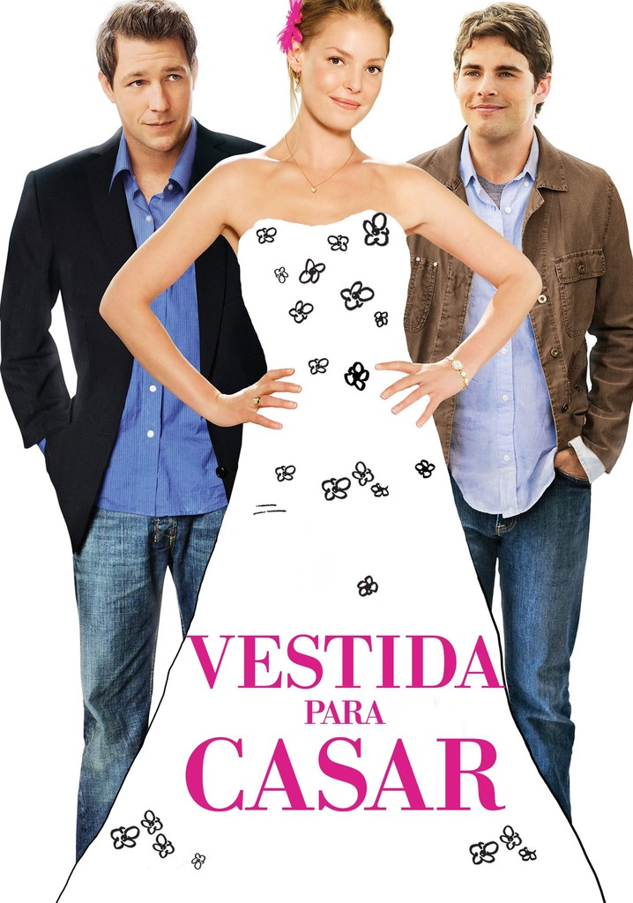

Filmes romanticos que vão te fazer suspirar
Top 10 melhores filmes de romance
Como eu era antes de você (2016)
★★★★☆
De origem modesta e sem grandes aspirações, a peculiar Louisa Clark é contratada
para ser cuidadora de Will, um jovem tetraplégico depressivo e cínico.
Esposa de mentirinha(2011)
★★★★★

Infeliz em sua tentativa de casamento, Danny passa a vivenciar relacionamentos
sem compromisso para driblar a carência. Assim, ele toca sua vida como cirurgião
plástico bem-sucedido, tendo sua melhor amiga Katherine mãe solteira de um casal,
como fiel escudeira. Quando conhece a jovem Palmere a paixão toma conta de ambos,
ele inventa, para tentar conquistá-la, que é marido de Katherine, pai das crianças
e que vai se separar.
A proposta(2009)
★★★★☆
Em A Proposta, Margaret Tate (Sandra Bullock) é uma poderosa editora de livros, que
se vê em apuros ao ser comunicada de sua deportação para o país-natal, o Canadá. Para
evitar que isto ocorra ela declara estar noiva de Andrew Paxton(Ryan Reynolds), seu assistente.
Vestida para casar (2008)
★★★☆☆

Desde garotinha Jane (Katherine Heigl), começa a se preocupar muito com a felicidade os outros
em primeiro lugar, e acaba sendo a pessoa que todos procuram na hora de planejar um matrimônio.
Mas quando sua irmã mais nova, Tess, conquista o homem que Jane secretamente ama, ela passa a
questionar o seu papel de boazinha e generosa.
Ela é demais (2006)
★★★★☆

Zach Siler é o figurão da escola e motivo de inveja dos seus colegasPorém, sua popularidade diminui
drasticamente quando sua namorada, a animadora de torcida, Taylor o deixa pelo ator Brock Hudson.
Desesperado para recuperar sua reputação, Siler concorda com umdesafio aparentemente impossível.
Ele terá seis semanas para ganhar a confiança da nerd LaneyBoggs e ajudá-la a se tornar a próxima
rainha do baile da escola
10 coisas que eu odeio em você (1999)
★★★★☆

Bianca Stratford é bonita e popular, mas não pode namorar antes que sua irmã mais velhaencontre um
namorado primeiro. O problema é que nenhumgaroto consegue chegar perto da irmã, Kat Stratford.Para
resolver a situação, um rapaz interessado em Bianca suborna um amigocom passado misterioso para sair
com Kat e, quem sabe, tentar conquistá-la.
Como perder um homem em 10 dias (2003)
★★★★★

Ben é um publicitário que aposta com o chefe que faz qualquer mulher se apaixonar por ele em dez dias.
Se conseguir, será o responsável por uma cobiçada campanha de diamantes.Andie é uma jornalista que,por
causa de uma matéria, está decidida a infernizar a vida de qualquerhomem que se aproximar.Os dois se
conhecem em um bar e escolhem um ao outro como alvo de seus planos totalmente opostos.
Amor de aluguel (2003)
★★★☆☆

O nerds de ciências Alvin Johnson é especialista em engenharia, mas incompetente quando se trata de namoro
Um dia, uma garota popular,Paris Morgan, aparece na loja de carros onde ele trabalha depois da escola porque
danificou o carro de sua mãe e urgentemente precisa de reparos.Alvin oferece um suborno: ele vai consertar o
carro imediatamente em troca de duas semanas de namoro.Paris concorda e Alviné capaz de entrar no reino sagrado
das crianças populares.
Tudo que uma garota quer (2003)
★★★★☆

Antes de completar 17 anos, Daphne Reynolds decide tomar uma decisão radical: partir para a Inglaterra para
encontrar seu pai, que ela conhece apenas por uma foto antiga e que não sabia da gravidez quando se separou de
Libby, mãe de Daphne. Lá, ela encontra um pai amoroso, mas enfrentaproblemas ao ver confrontada sua educação
liberal com os rígidos costumes da educação britânica.
A fera (2011)
★★☆☆☆
Kyle é um jovem bem-sucedido e cobiçado pelas mulheres, mas ao tentar humilhar Kendra ela lança uma maldição
que o deixa com o rosto deformado. Envergonhado, ele passa a viver isolado com acompanhia de uma empregada
e um professor cego contratado para lhe dar aulas. Para quebraro feitiço, Kyle tem de fazer com que uma mulher
consiga amá-lo de verdadeEle volta a ter esperanças quando se aproxima de Lindy, uma colega da escola.